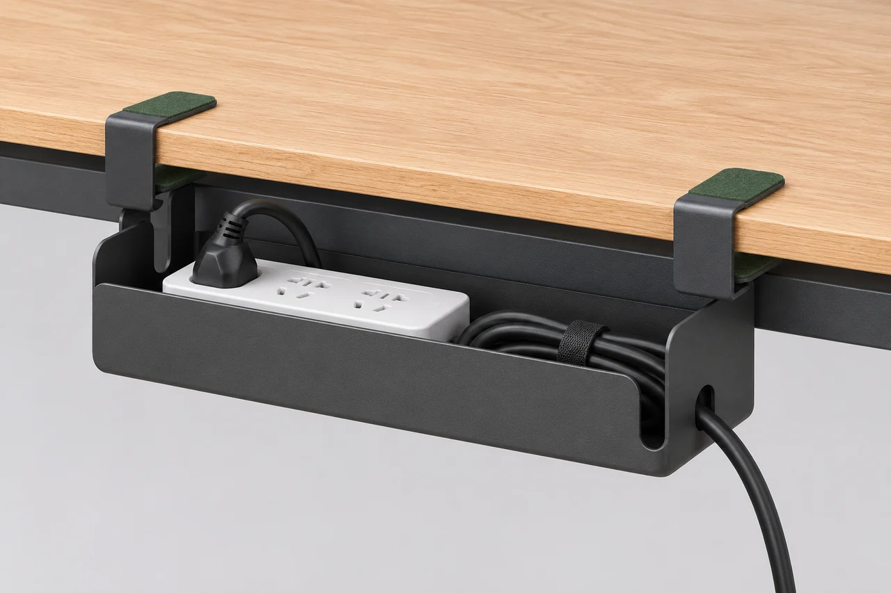

小桌面的免打孔理线
卖家输入 美国市场，桌面空间有限、不能打孔，想找一个可小批量试卖的桌下理线方向。

继续核查 · 暂缓打样
短桌沿怎么装得下？
通用免打孔托盘已有替代。这个构想针对桌沿可夹空间短、下方又有横梁的桌子。
- 浅夹具
- 夹住桌板边缘，尽量避开后方横梁。
- 短托盘
- 放一条插排和余线，减少占用的桌沿长度。
- 侧边出线
- 给较粗的插头和线缆留出空间。
- 目标市场
- 美国小桌面与桌下理线
- 样本最新反馈
- Walmart 上的买家评论
- 市场容量
- 待估缺少该细分品类的销量或销售额
候选方向
适配短桌沿的托盘值得继续查
差异化假设 更短的托盘与更浅的夹具，侧边同时预留粗插头的出线空间。
淘汰条件 如果现有夹装或横梁挂装产品在目标价位就能覆盖这个场景，放下该方向。
通用免打孔托盘降低优先级
样本中的商品已经覆盖边缘夹装、长度可调和兼容横梁挂装。单凭免打孔很难和它们拉开差别。
竞品对照
4 个公开商品系列| 商品 | 安装或适配方式 | 长度 | 页面标价 |
|---|---|---|---|
| IKEA FÖRSÄSONG | 桌边夹装。买家反馈某款圆弧桌边夹不住。 | 15 英寸 | US$12.99 |
| VIVO 夹装理线网 | 桌边夹装。有买家遇到金属横梁干涉。 | 55 英寸款 | US$49.99 |
| Mount-It! MI-7282 | 可挂在兼容的升降桌横梁上。 | 23.2 英寸 | US$29.99 |
| StarTech CALB | 免工具夹装，长度可调。 | 0.8、1.0 或 1.2 米 | 待核实 |
标价仅代表所查页面和规格，且可能变化。目标桌型能否安装仍需核对。
买家反馈
提及该问题的商品系列数 / 本次抽查反馈的系列数
投入前核查
- 先量三个尺寸
- 桌板厚度、桌后缘到横梁的可用深度、插头和出线所需的空间。
- 拿现货做对照
- 把夹装款和横梁挂装款分别放进尺寸表，验证它们在哪些桌型上确实装不了。
- 样本边界
- 只比了四个公开商品系列，反馈来自其中两个。条形图显示本次抽查的覆盖，不能用来估计抱怨比例或市场规模。